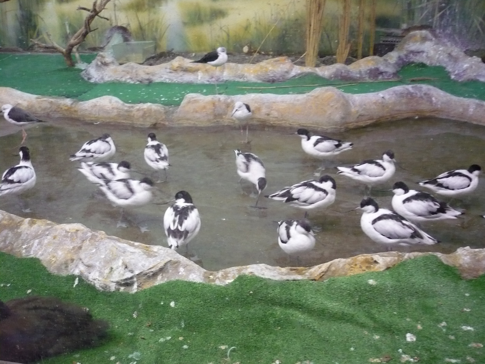

| Роль стадного чувства в жизни учащихся СУНЦ МГУ |

|
Стадный инстинкт
Приведем несколько определений:
|
Стадо — системная целостность, которую образует группа животных с какими-либо определенными целями. Процесс образования стада получил название стадения. В состав стада входят по большей части животные одного вида, но могут быть стада и из особей разных видов. Для формирования стада принципиально необходимо наличие стадного инстинкта, именуемого еще стадным чувством, у особей, его составляющих. Стая радикально отличается от стада по признаку структурированности и многократного усложнения системных связей. Для человека как биологического вида аналогом стаи является социум, аналогом стада — толпа. |  |
Инстинкт (от лат. instinctus — побуждение) — целесообразное поведение без осознания цели; ситуация, в которой осуществление одного рефлекса приводит к осуществлению другого. Инстинкт — комплекс двигательных актов или последовательность действий, свойственных организму данного вида, реализация которых зависит от функционального состояния животного (определяемого доминирующей потребностью) и сложившейся в данный момент ситуации. Инстинктивные реакции носят врожденный характер, и их высокая видовая специфичность часто используется как таксономический признак наряду с морфологическими особенностями данного вида животных.
Если вы дочитали(долистали) до этой строчки, поздравляем вас! Вы преодолели настойчивое желание немедленно закрыть эту страницу и больше не открывать. Дальше вам придется мучаться существенно меньше, так как предыдущие два определения - это самое заумное из всего самого заумного на сайте. Для облегчения вашей участи приведем более интересную цитату на тему стадного инстинкта в принципе:
Основными инстинктами, определяющими человеческое поведение являются:
- стадное чувство,
- сексуальное влечение,
- жадность.
Сила каждого из этих инстинктов варьируется от особи к особи, создавая в совокупности индивидуальную модель поведения, которую сами люди называют характер.
Влекомые стадным инстинктом, люди собираются в группы различной численности, будучи якобы обьединёнными общим интересом. При этом, на самом деле, они действуют, в основном, в интересах вожака, которым, как правило, оказывается наиболее горластая особь в стаде.
Как же проявляется стадное чувство в этом замечательном заведении, СУНЦ МГУ?
Об этом вы узнаете в следующей серии!(ну в смысле здесь)